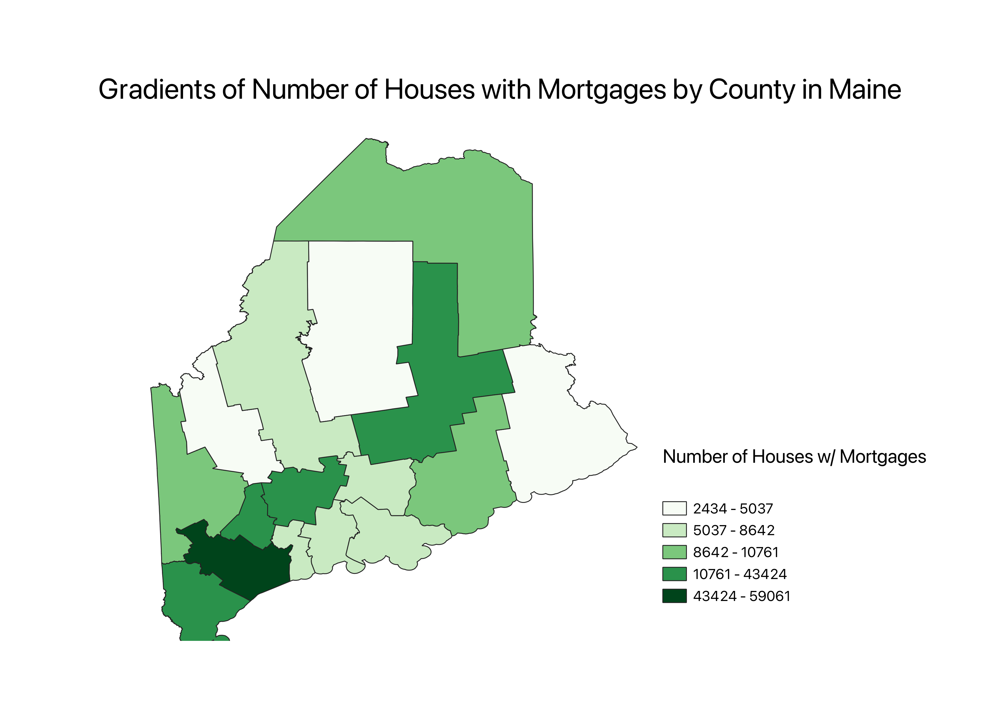

Homework 6: Census data choropleth
Sarah Masters
The map below is a chlorpleth map of Maine, with the different colors representing different gradients of
the number of owner-occupied housing units with a mortgage in each county. For instance, the white counties had between 2,434 - 5,037
housing units with mortgages, whereas the dark red counties had between 43,424 - 59,061 housing units with mortgages.

Data used for this project
CSV dataset
Link to GEOJson